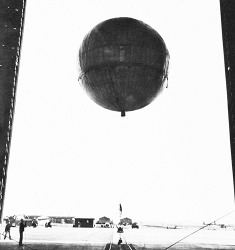
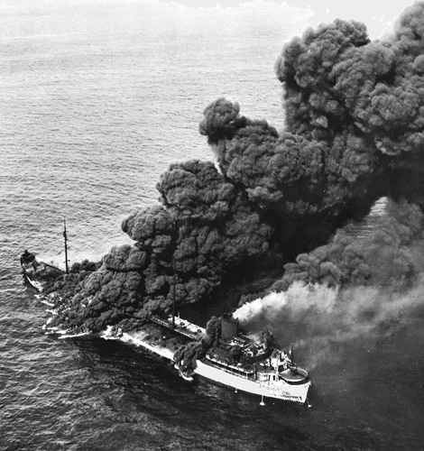
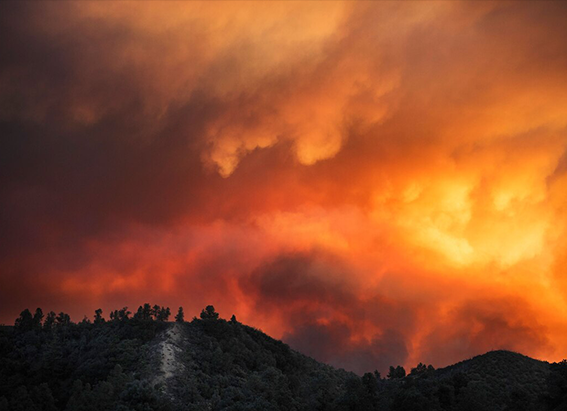
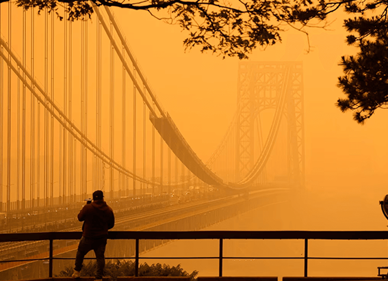
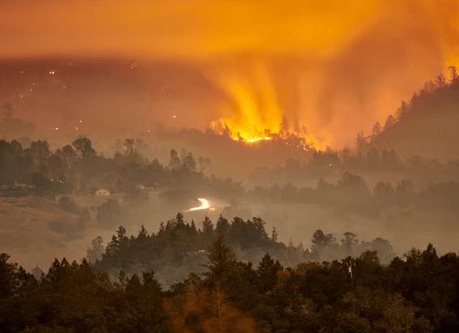

NATIONAL GEOGRAPHIC
Pearl Harbor was the only WWII attack on the U.S., right Wrong.
HISTORY & CULTURE
- 
- 
Most of the fighting during World War II took place overseas, destroying much of Europe and Pacific nations in the process. But there are little known instances of Japan and Nazi Germany attacking the American mainland. These incidents including balloon bombs, lurking U-boats, and a mysterious object flying in Los Angeles’s night sky highlighted the vulnerability of the U.S. homeland and prompted increased defense measures. They also unleashed fear and suspicion throughout the American population, notably against Japanese Americans, resulting in the internment of thousands of innocent people. Here are some notable examples of enemy attack on U.S. soil while war raged abroad.
Japanese balloon bombs
Between November 1944 and April 1945, the Japanese launched about 9,000 high- altitude balloon bombs, known as “fire balloons,” that were carried across the Pacific Ocean in the atmospheric jet stream with the aim of starting forest fires in the western United States. The balloons were kept afloat using a mechanism that triggered a fuse when the balloon dropped in altitude, releasing a sandbag to lighten the load and rise back up; this was repeated until all that was left was the bomb. While there have been only 300 documented recoveries, some of these balloons reached as far inland as Wyoming and Montana.
One had tragic results. On May 5, 1945, a balloon bomb exploded near Bly, Oregon, killing six Americans on a church picnic, including a pregnant woman and five children the only mainland casualties that resulted from enemy action during World War II. While the Japanese hoped to instill panic and divert resources from the war effort, the U.S. government kept the enemy’s scheme under wraps from the public for fear of mass hysteria. Even the affected community was forced to remain silent after the disastrous event.
The German U-boat threat
German U-boats an abbreviation of Unterseeboot, the German word for “undersea boat”—prowled the Atlantic waters along the American and Canadian coastlines between January and June 1942, targeting U.S. and Allied shipping. In the first three months of 1942, they sank more than 100 ships some within sight of land. In North Carolina alone, U-boats sank 78 merchant ships, killing 1,200 merchant marines.
The U.S. Navy was not prepared for this threat, and the situation became so desperate that unarmed civilian light aircraft patrolled offshore, though the pilots had no means of driving the U-boats from the U.S. coastline. Some crews later jury rigged their planes with bombs, successfully sinking two U-boats.
The attacks finally declined after American merchant ships began sailing in transatlantic convoys, accompanied by sea and air escorts.
A skulking Japanese submarine
On February 23, 1942, a Japanese submarine, the I-17, under the command of Commander Nishino Kozo surfaced off the coast of California and shelled the Ellwood oil field near Santa Barbara. It was one of California’s largest oil fields, but unlike those in San Francisco and Los Angeles, it did not have a major military presence.
Contemporary newspaper reports describe the attack as beginning at 7:15 p.m., with a total of about 16 shells fired. Hilda Wheeler, who helped run the nearby Wheeler Inn, described the scene: “We saw the shells tearing up the ground as they landed between us and the ocean front. … We all thought at first it was target practice. And then we looked out back and saw the earth spurting up and we were scared to death.”
Amazingly, the only destruction was a damaged rig that needed a $500 repair job, and one man was wounded when he attempted to defuse an unexploded shell. U.S. planes chased the sub, but Nishino got away.
Nevertheless, the incident generated significant fears of invasion among Americans living on the West Coast. Newspapers blurted: “Submarine Shells Ellwood Oilfield” and “First Attack of War on Continental U.S.” Soon after, the U.S. government unjustly rounded up more than 120,000 Japanese Americans the majority U.S. citizens and placed them in internment camps, where they remained until 1945.
Comments :
- john Very good
- john Very good
Leave a Reply
Your email address will not be published. Required fields are marked*
Related posts:
-
Orange skies are the future. Prepare yourself.
As climate change drives an increase in wildfires, we’re seeing more smoke lofted into the upper atmosphere each fire season. Depending on wind and weather, this smoke can spread hundreds or thousands of miles from its source
View article -
What the Air Quality Index measures and what to do when it’s code red
If you live on the U.S. East Coast, your phone might have been lighting up all day with alerts about your local air quality. Much of the region is under a “code red” alert as a thick blanket of smoke
View article -
Wildfires can intensify destructive storms half a continent away
Wildfires in the western United States are getting bigger, stronger, and worse as climate-fueled drought and unprecedented heat push them to new extremes.
View article